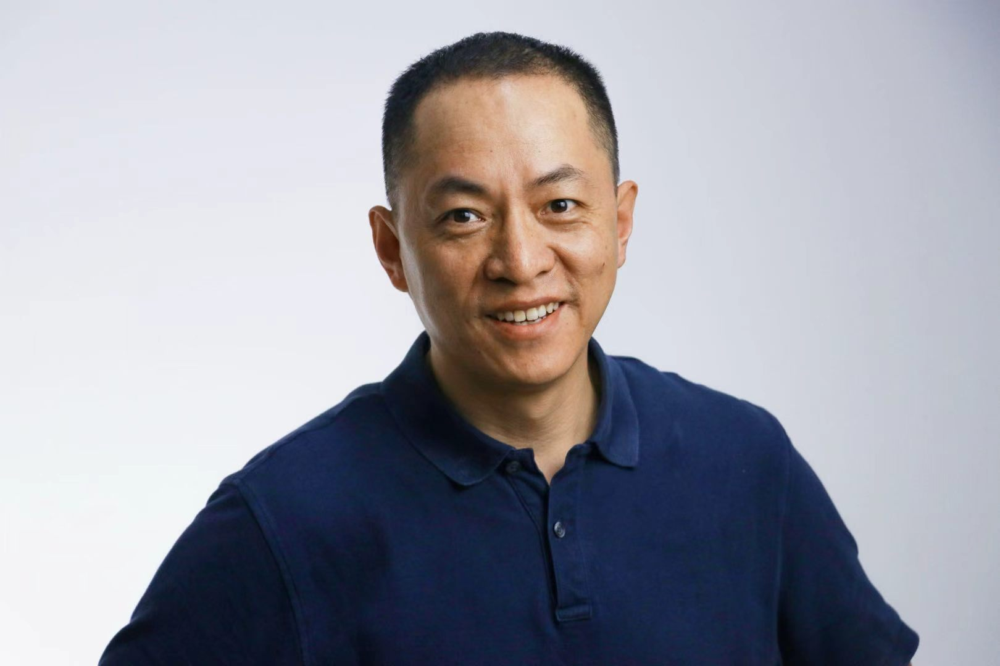

About
Andrew Huiqing Ji纪会卿
I’m Andrew Huiqing Ji, an entrepreneur in pre-ordered party meal packages and local delivery, as well as a real estate developer living and working in New York and New Jersey.
Born in Yantai, China, my journey began with study and work in Beijing, followed by years across media and technology, mobility, and real estate. In 2022, that journey brought me to the United States.
Today, I run a business offering pre-ordered party meal packages and local delivery, while also developing buildings in New York. My interests include cities, real estate, technology, business, and family—especially how ordinary people can build meaningful lives through years of small, deliberate efforts.
This website documents the things I build, the books that have influenced me, and the lessons learned along the way. It also records the people and experiences that have shaped my life.
In one sentence:
I build—buildings, businesses, and my own life.
